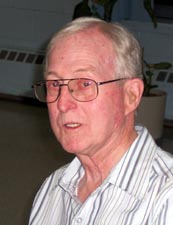

ANTOINE BEAUDOIN
notre ancêtre de la 8ième génération
fiche familiale
 |
Antoine Beaudoin décède à l'âge de 84 ans. Naissance le 18 avril 1913 à Ste-Cécile de Masham (La Pêche) Baptême le 18 avril 1913 à Ste-Cécile-de-Masham. Dit Tony. Baptisé Jos, Samuel, Antoine. Parrain son oncle Samuel Renaud, Marraine sa tante Henriette Lamothe. Décès le 21 décembre 1997 au Centre Hospitalier de Rouyn-Noranda. Funérailles le 23 décembre 1997 à St-Joseph de Rouyn-Noranda. Sépulture au cimetière Notre-Dame de Rouyn-Noranda. (Son histoire) Père: Isaïe Baudoin Beaudoin Mère: Catherine Renaud (sa famille) |
Âge de l'époux 23 ans, âge de l'épouse 22 ans.
Témoins Elzéar Paquette et Lucienne Lajoie, leurs amis.
 |
Épouse: Germaine Henri décède à l'âge de 95 ans. Naissance le 29 octobre 1913 à Ste-Rose-de-Watford Baptisée Marie, Anne, Germaine Parrain Joseph Bédard, marraine Albia Sylvain Décès le 18 avril 2009 au Centre Hospitalier de Rouyn-Noranda. Funérailles le 22 avril 2009 à Immaculée-Conception de Rouyn-Noranda. Sépulture au cimetière Notre-Dame de Rouyn-Noranda. Arrivée à Macamic en 1919, elle y fit toute ses études. En 1935 elle quitta Macamic pour venir à Duparquet, elle y travaille à titre de "Waitresse" à la salle à manger de l'Hôtel Goldfielf où elle rencontre Tony. Très active chez les Dames Fermières et dans toutes les activités paroissiales ainsi que membre de différentes chorales. Excellente tisserande, elle transmit généreusement ses connaissances. Amateur de ski, quilles, curling et de voyages dont plusieurs se firent avec la compagnie de sa bonne amie Antoinette Massicotte. Marraine de: Raymonde Champagne, Lise Thérien, Réal Beaudoin, Guy Lussier et Éric Beaudoin. Père: Eugène HenriMère: Graziella Provost (sa famille) |
Portrait de la famille d'Antoine Beaudoin à Rouyn-Noranda le 16 juillet 1983.

de gauche à droite rangée à l'avant :
Lisèle (dite "Lise"), Antoine (dit "Tony"), Germaine Henri et Francine
rangée à l'arrière :
Jean-Pierre, André, Michèle, Yvon et Joël
de gauche à droite rangée à l'avant :
Lisèle (dite "Lise"), Antoine (dit "Tony"), Germaine Henri et Francine
rangée à l'arrière :
Jean-Pierre, André, Michèle, Yvon et Joël
|  |
Enfant 1 Lisèle Beaudoin décède à l'âge de 70 ans. Naissance: 21 octobre 1936 à Duparquet Baptême: 8 novembre 1936 à St-Albert-le-Grand de Duparquet Décès: 23 mars 2007 à Cayo Santa Maria, Cuba Funérailles: 2 avril 2007 à Résidence Funéraire de l'Abitibi-Témiscamingue de Rouyn-Noranda Sépulture: 12 avril 2007 au Columbarium, Résidence Funéraire de l'A-T de Rouyn-Noranda Mariage le 10 août 1963 à St-Joseph de Rouyn-Noranda Conjoint: Danny Webb décède à l'âge de 74 ans. Naissance: 9 juillet 1937 à Sherbrooke Décès: 21 octobre 2011 à Sherbrooke Funérailles: 27 octobre 2011 à Coop-funéraire de l'Estrie de Sherbrooke Sépulture: 5 novembre 2011 au Columbarium, Résidence Funéraire de l'A-T de Rouyn-Noranda Père: Frederick-Ernest Webb Mère: Marie-Anne Tardif |
Enfant 2 Yvon Beaudoin
Naissance: 9 décembre 1937 à Duparquet
Mariage le 20 octobre 1962 à
Immaculée-Conception de Rouyn-Noranda
Conjointe: Fleurette Rivest
Naissance: 7 août 1935 à Laverlochère
Père: Lionel Rivest
Mère: Alice Barriault
(sa famille)
Enfant 1 Éric Beaudoin
Conjointe: Geneviève Duret
Charles-Henri Beaudoin
-------------------------------------------------------------------------------
Enfant 3 André Beaudoin
Naissance: 4 août 1942 à Duparquet
Mariage le 29 juillet 1967 à Sacré-Coeur de Noranda
Conjointe: Pauline Gaudreault
Père: Philippe Gaudreault
Mère: Jeannette Bélanger
Enfant 1 Nathalie Beaudoin
Conjoint: Pierre Beaudoin
Camille Beaudoin
Marie-Jeanne Beaudoin
Émile Beaudoin
Enfant 2 Stéphane Beaudoin
Conjointe: Christine Massé
Jérémy Beaudoin
Raphaël Beaudoin
Conjointe: Marielle Simard
Naissance: 29 juillet 1946 à Mont-Brun
Père: Armand Simard
Mère: Jeanne-D'Arc Lavoie
-------------------------------------------------------------------------------
Enfant 4 Joël Beaudoin
Naissance: 23 août 1943 à Duparquet
Mariage le 3 juin 1967 à St-Michel de Rouyn-Noranda
Conjointe: Pierrette Robichaud
Naissance: 7 juin 1944 à Rouyn-Noranda
Père: Émilien Robichaud
Mère: Elmina Théberge
Enfant 1 Alain Beaudoin
Conjointe: Isabelle Boisclair
Brandon-Antoine Beaudoin
Jordan Beaudoin
Evan Beaudoin
Enfant 2 Sylvin Beaudoin
Conjointe: Dominique Jacques
Philippe Beaudoin
-------------------------------------------------------------------------------
  |
Enfant 5 Francine Beaudoin décède à l'âge de 64 ans. Naissance: 29 janvier 1947 à Duparquet Baptême: 16 février 1947 à St-Albert-le-Grand de Duparquet Décès: 16 août 2011 à Maison de soins palliatifs de Rouyn-Noranda Funérailles: 19 août 2011 à Immaculée-Conception de Rouyn-Noranda Sépulture: au cimetière Notre-Dame de Rouyn-Noranda Mariage le 17 août 1968 à St-Joseph de Rouyn-Noranda Conjoint: Jean-Guy Poirier décède à l'âge de 75 ans. Naissance: 17 mai 1942 à Bellecombe Décès: 3 mai 2018 à Rouyn-Noranda Père: Lorenzo Poirier Mère: Germaine Drouin |
Conjointe: Marie-Josée Drolet
Conjointe: Chantale Baillargeon
Conjointe: France Grellier
Sarah Grellier-Poirier
 |
Mariage le 16 juillet 1983 à Rouyn-Noranda Conjoint: Marcel Bélanger décède à l'âge de 83 ans. Naissance: 5 avril 1938 à Rouyn-Noranda Décès: 7 janvier 2022 à la résidence Bleu Horizon de Rouyn-Noranda Funérailles: 15 janvier 2022 à la Résidence funéraire de l'A-T de Rouyn-Noranda Sépulture: au cimetière Notre-Dame de Rouyn-Noranda Père: Adjutor Bélanger Mère: Simone Tremblay |
Enfant 6 Jean-Pierre Beaudoin
Naissance: 30 novembre 1952 à Duparquet
-------------------------------------------------------------------------------
| |
Enfant 7 Michelle Beaudoin Naissance: 30 octobre 1954 à Duparquet Union en 1983 à Montréal. Conjoint: Yves Noël décède à l'âge de 53 ans Naissance: 26 juillet 1949 à Montréal Décès: 19 janvier 2003 à Montréal Père: Jean-Joffre Noël Mère: Mariette Lambert |
Conjointe: Zoé Naum
Arthur Naum-Noël
Marika Naum-Noël
Jules Naum-Noël
Enfant 2 Julie Noël
Conjoint: Alexandre Legault-Déry
Léo-Yves Noël-Déry
Arnaud-Alain Noël-Déry
Milane-Michelle-Sylvie Noël-Déry
Enfant 3 Antoine Noël
Conjointe: Éloise Albaret
Olive Noël-Albaret
-------------------------------------------------------------------------------
Début de la page